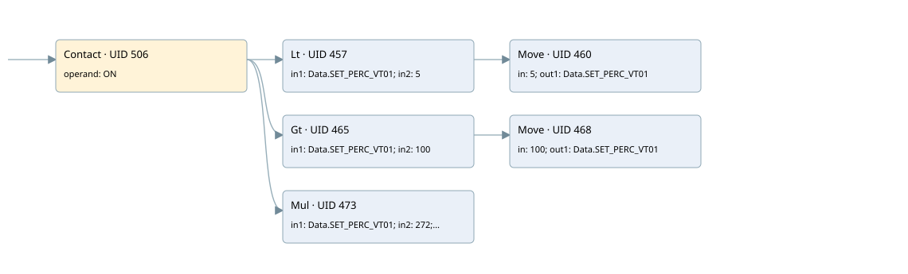

fn-01 ventilator
analog output conversion · 검색 색인 순서 7 · 원본 내부 NID 추정 7
백업 PLF 원본의 3085714 바이트 위치에서 복원한 XML. 검색 문서 1685의 객체 키 16102200ab66000000000000와 연결했다. 이름 해석 12/12개. 남은 RefId는 상수 또는 미해석 참조다.
연결 구조 다시 그리기
원본 Part/PCon/Wire를 이용한 연결도다. TIA 화면의 래더 배치 또는 실행 결과를 재현한 그림은 아니다. 핀 연결은 아래 표와 원본 XML을 기준으로 읽는다. 노드 위에 마우스를 두면 피연산자 이름을 볼 수 있다.

접점·코일·블록과 피연산자
| Part UID | Gate | Negated 핀 | 연결 피연산자 |
|---|---|---|---|
| 506 | Contact | operand = ON | |
| 457 | Lt | in1 = Data.SET_PERC_VT01; in2 = 5 | |
| 460 | Move | in = 5; out1 = Data.SET_PERC_VT01 | |
| 465 | Gt | in1 = Data.SET_PERC_VT01; in2 = 100 | |
| 468 | Move | in = 100; out1 = Data.SET_PERC_VT01 | |
| 473 | Mul | in1 = Data.SET_PERC_VT01; in2 = 272; out = FN01_SP_SPEED |
접점 경로를 펼친 조건식
Contact·O/A·비교기의 원본 연결을 읽기 쉽게 펼친 보조 해석이다. POWER는 전원 레일 시작을 뜻한다. 호출 블록·에지·타이머의 내부 동작과 다중 쓰기 순서는 이 표로 실행 검증하지 않았다. 미해석 핀과 RefId는 원문 연결표에서 확인한다.
| UID | 동작 | 대상 | 원본 접점 경로 | 내용 |
|---|---|---|---|---|
| 460 | Move | Data.SET_PERC_VT01 | (ON AND [Data.SET_PERC_VT01 < 5]) | Move 입력 5 |
| 468 | Move | Data.SET_PERC_VT01 | (ON AND [Data.SET_PERC_VT01 > 100]) | Move 입력 100 |
원본 배선 연결
| Wire UID | 동일 Wire 연결 끝점 |
|---|---|
| 508 | Powerrail {} ↔ Part 506.in |
| 489 | ORef 477 (ON) ↔ Part 506.operand |
| 507 | Part 506.out ↔ Part 457.pre ↔ Part 465.pre ↔ Part 473.en |
| 490 | ORef 478 (Data.SET_PERC_VT01) ↔ Part 457.in1 |
| 491 | ORef 479 (5) ↔ Part 457.in2 |
| 492 | Part 457.out ↔ Part 460.en |
| 494 | ORef 480 (5) ↔ Part 460.in |
| 495 | Part 460.out1 ↔ ORef 481 (Data.SET_PERC_VT01) |
| 496 | ORef 482 (Data.SET_PERC_VT01) ↔ Part 465.in1 |
| 497 | ORef 483 (100) ↔ Part 465.in2 |
| 498 | Part 465.out ↔ Part 468.en |
| 500 | ORef 484 (100) ↔ Part 468.in |
| 501 | Part 468.out1 ↔ ORef 485 (Data.SET_PERC_VT01) |
| 502 | ORef 486 (Data.SET_PERC_VT01) ↔ Part 473.in1 |
| 503 | ORef 487 (272) ↔ Part 473.in2 |
| 504 | Part 473.out ↔ ORef 488 (FN01_SP_SPEED) |
식별자 해석 근거 12개
| ORef UID | RefId | 이름 | IdentXmlPart 파일 | 해석 방법 |
|---|---|---|---|---|
| 477 | 1 | ON | 0664-IdentXmlPart.xml | UID/RID + search-text + NID agreement |
| 478 | 49 | Data.SET_PERC_VT01 | 0662-IdentXmlPart.xml | UID/RID + search-text + NID agreement |
| 479 | 44 | 5 | 0661-IdentXmlPart.xml | literal candidate: UID/RID/NID + nearby named declarations + search-text agreement |
| 480 | 44 | 5 | 0661-IdentXmlPart.xml | literal candidate: UID/RID/NID + nearby named declarations + search-text agreement |
| 481 | 49 | Data.SET_PERC_VT01 | 0662-IdentXmlPart.xml | UID/RID + search-text + NID agreement |
| 482 | 49 | Data.SET_PERC_VT01 | 0662-IdentXmlPart.xml | UID/RID + search-text + NID agreement |
| 483 | 12 | 100 | 0661-IdentXmlPart.xml | literal candidate: UID/RID/NID + nearby named declarations + search-text agreement |
| 484 | 12 | 100 | 0661-IdentXmlPart.xml | literal candidate: UID/RID/NID + nearby named declarations + search-text agreement |
| 485 | 49 | Data.SET_PERC_VT01 | 0662-IdentXmlPart.xml | UID/RID + search-text + NID agreement |
| 486 | 49 | Data.SET_PERC_VT01 | 0662-IdentXmlPart.xml | UID/RID + search-text + NID agreement |
| 487 | 16 | 272 | 0661-IdentXmlPart.xml | literal candidate: UID/RID/NID + nearby named declarations + search-text agreement |
| 488 | 53 | FN01_SP_SPEED | 0664-IdentXmlPart.xml | UID/RID + search-text + NID agreement |
검색 코드 보조 자료
참조 명칭을 찾기 위한 자료이며 실행 순서나 AND/OR 관계는 위 연결표로 확인한다.
"on" "data".set_perc_vt01 5 move 5 "data".set_perc_vt01 100 move 100 "data".set_perc_vt01 mul "data".set_perc_vt01 272 "fn01_sp_speed":p "data".set_perc_vt01